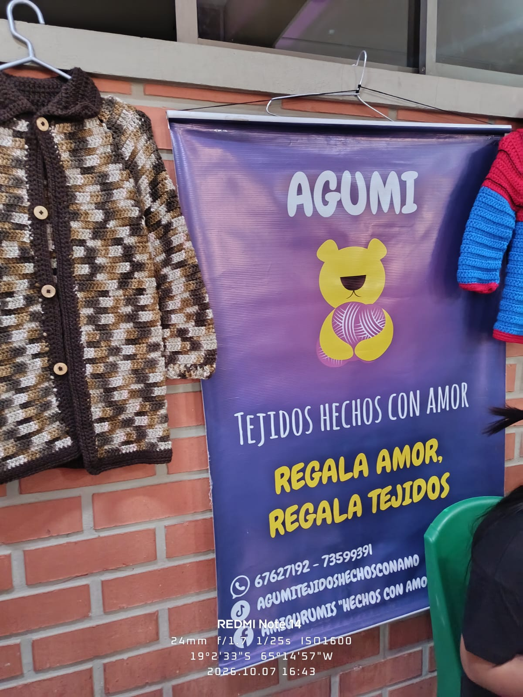

Stand 1: AGUMI
Logotipo:
Información del Emprendimiento
| AGUMI | |
| Tienda virtual | |
| Tejidos con mucho amor (ropas, llaveros, peluches y otros) | |
| 67627192 / @migorumis |
Fotografías del Stand
|
 |

|
Entrevista al Emprendedor
Para optimizar las ventas de un emprendimiento de tejidos como AGUMI (enfocado en amigurumis, llaveros y prendas tejidas), se deberían implementar herramientas tecnológicas clave: Catálogo Digital en WhatsApp Business organizado por categorías (llaveros, amigurumis, ropa) con precios y tiempos de entrega; Control de Inventario con aplicaciones como Treinta o Loyverse para calcular el costo de insumos (lana, relleno, accesorios) y asegurar el margen de ganancia; Marketing Visual con Canva y CapCut para publicar videos breves del proceso artesanal en Instagram y TikTok.